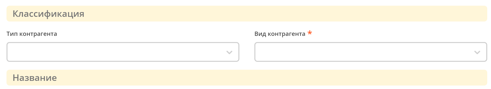

Best practice
Типы данных
При создании типа данных необходимо руководствоваться следующим правилом для выбора типа родителя:
{kind=link}
Справочник - тип для хранения наборов бизнес-данных, которые будут использоваться как статические данные для документов, не участвующие непосредственно в бизнес-процессах. Маркером того, что тип будет справочником является указание при его создании только общей информации и перечня атрибутов.
Кейс - тип для хранения записи, статус которой изменяется в процессе жизненного цикла автоматически в ходе бизнес-процесса, или вручную (например, при использовании канбан-доски). Маркером того, что тип будет кейсом является необходимость прикрепления к нему процесса и указания при создании общей информации, атрибутов, ролей, статусов и матрицы прав.
Остальное – иные созданные ранее типы данных.
Подробно о типах данных
Формы
Подробно о формах
Формы справочников, дочерних элементов (table-form)
Все элементы формы располагаются внутри контейнера. Шапка формы и кнопки статичны, а скроллироваться могут только поля на форме. На примере справочника контрагентов:
Колонки:
Если на форме располагается от 1 до 3 полей, то они размечаются в одну колонку.
Если на форме 4 и более полей, то все поля на форме должны располагаться в 2 колонки.
Если необходимо функциональное деление колонок, используются панели с заголовками. Колоночное деление может располагаться как внутри панели, так и панель может находиться внутри колонки

{kind=link}
{kind=link}
{kind=link}
Формы создания заявок
Все элементы формы должны располагаться внутри контейнера. Шапка формы и кнопки должны быть статичны, а скроллироваться могут только поля на форме. На примере формы договора:
Все поля на форме должны располагаться в 2 колонки. Если необходимо функциональное деление колонок, используются панели с заголовками. Панели располагаются также внутри колонок.
Критерии к панелям:
Кнопки
кнопки располагаются снизу формы,
слева по ширине 1/4 ширины формы располагается кнопка «Отмена» серого цвета,
справа по 1/4 ширины формы располагается кнопка «Создать» синего цвета.
слева от кнопки «Создать» по ширине 1/4 ширины формы располагается кнопка «Сохранить» серого цвета.
необходимо убирать большой отступ под кнопками снизу формы.
Пример расположения и вида кнопок:
Обычно на форме задач располагается поле «Комментарий» и кнопки согласования. В зависимости от требований процесса наполнение может меняться.
{kind=link}
Формы задач
Требования к кнопкам:
Все кнопки располагаются с выравниванием по левому краю формы
Сначала располагаются кнопки с отрицательной резолюцией серого цвета
С правого края располагаются кнопки с положительной резолюцией синего цвета
Если требуется, между кнопками отрицательной и положительной резолюции располагаются кнопки нейтральной резолюции серого цвета.
Пример формы задач:
{kind=link}
Шаблон уведомления
Подробно о шаблонах уведомлений